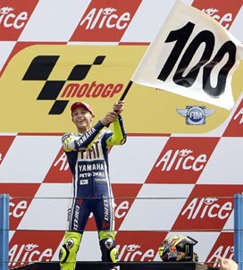

Carriera


INDICE
- Gli esordi
- Le classi minori: 125 e 250
- La classe regina: 500 e MotoGP
- Rivalità
Gli esordi
Il centauro pesarese dimostra un certo feeling per i motori fin dall'età di 11 anni; è qui che debutta nel campionato italiano "Sport production" nella categoria 125.
Il giovane pilota di Tavullia comincia a vincere gare a ripetizione, e nel 1993, sulla pista di Magione, debutta in sella a una moto vera, una Cagiva 125. Nel 1994, dopo un anno, si classifica primo.
Nel 1995 vince il campionato italiano della classe 125 (a 16 anni è il più giovane della storia), e si classifica terzo nell'europeo della stessa categoria.
Le classi minori: 125 e 250
L'esordio al motomondiale arriva nel 1996: Rossi guida un'Aprilia RS 125 R del team privato AGV.
La prima vittoria, preceduta dalla prima pole position, è nel GP della Repubblica Ceca, a Brno.
L'anno seguente, il 1997, passa alla squadra ufficiale Aprilia Racing.
A 18 anni diventa campione del mondo della classe 125: è il suo primo titolo.
Nel 1998 Valentino compie un salto nella classe superiore: la 250. Debutta sempre con Aprilia.
Nel 1999 è di nuovo il più forte: vince il motomondiale e si laurea campione per la seconda volta.
La classe regina: 500 e MotoGP
La stagione anno 2000 è quella del passaggio di Rossi alla classe 500. Valentino cambia anche la moto, salendo in sella alla Honda.
L'obiettivo per il primo anno è quello di fare esperienza, tuttavia alla fine del campionato sono numerosi i grandi risultati.
Nella seconda parte di stagione riesce pure a lottare per il titolo mondiale. Alla fine arriva secondo in classifica generale, dietro solo a Kenny Roberts Junior.
Nel 2001 compie un'altra impresa: dominando e quindi vincendo anche il motomondiale classe 500, Valentino (a 22 anni e 10 mesi), è il quarto più giovane campione mondiale della storia, dopo Freddie Spencer, Mike Hailwood e John Surtees.
Inoltre, Rossi rimane agli annali come l'ultimo iridato della classe 500 oltreché tuttora l'ultimo a vincere il titolo della classe regina con una squadra privata.
Il motomondiale 2002 è il primo ad adottare i regolamenti della neonata classe MotoGP, caratterizzata dalla possibilità di schierare motori a quattro tempi.
Una rivoluzione tecnica che, quantomeno all'inizio, non è accolta positivamente da Valentino il quale, nel frattempo migrato con tutta la sua squadra sotto le insegne del factory team Repsol Honda.
Nonostante ciò, riesce a portarsi a casa il campionato sia nel 2002 che nel 2003, dove, per la prima volta in carriera, riesce ad andare a podio in tutte le gare, ben 16: una netta superiorità che si palesa al massimo a Phillip Island quando, dopo essersi visto infliggere 10 secondi di penalizzazione a causa di un sorpasso effettuato su Marco Melandri in regime di bandiere gialle, impone un ritmo insostenibile rifilando 15 secondi di svantaggio al secondo classificato, annullando così la penalità.
Rossi però non finisce di stupire: nel 2004, non senza polemiche e dubbi sul suo futuro, dalla Honda passa alla Yamaha, sentendosi invariabilmente relegato in secondo piano quanto a considerazione, nei numerosi successi e record inanellati nel precedente quadriennio, rispetto al mezzo.
Sin dalle prime gare si dimostra competitivo: qualcuno si stupisce, altri credono sia tutto normale.
Lottando a denti stretti di volta in volta, Valentino dimostra prepotentemente le sue doti straordinarie di grinta e concentrazione, arrivando a vincere il mondiale con una gara di anticipo.
Nella stagione 2005 non c'è competizione: con la vittoria di Sepang (Malaysia), la numero 78, Valentino viene incoronato per la settima volta campione del mondo.
Dopo due annate altalenanti (2006 e 2007), chiuse rispettivamente al secondo (ad imporsi è stato l'americano Nicky Hayden di soli 5 punti all'ultima gara) ed al terzo posto, Rossi torna a lottare per il mondiale nel 2008.
A maggio, nel circuito di Le Mans, ottiene la vittoria numero 90 in carriera, raggiungendo lo spagnolo Angel Nieto: davanti a loro in questa speciale classifica c'è solo Giacomo Agostini, con 122 gare vinte.
A fine anno, Valentino conquista il tanto agognato titolo, ripetendosi anche l'anno successivo, il 2009: riesce così, non solo ad aggiudicarsi campione per la nona volta, bensì a raggiungere (ad Assen, in Olanda) la considerevole quota di 100 vittorie in carriera, di cui 40 con la Yamaha.
Purtroppo nel 2010 un incidente lo tiene lontano poche settimane dalle gare, tempo sufficiente per allontanarsi dalla vetta della classifica, che viene conquistata alla fine del campionato dal suo giovane compagno di scuderia.
Proprio con quest'ultimo nel corso dell'anno sono andate ad acuirsi sempre più le frizioni, sia verbali sia in pista, portando i rispettivi staff tecnici a vivere in pratica da separati in casa all'interno del box, come fossero due rivali di marca.
Ritrovatosi scalzato anche nelle gerarchie della casa giapponese, Valentino decide di iniziare una nuova sfida: salutare la Yamaha per andare all'italiana Ducati.
Il biennio che trascorre alla casa di Borgo Panigale è decisamente problematico e poco soddisfacente: non sale mai sul gradino più alto, collezionando come massimo bottino appena tre podi.
Rossi non riesce ad adattarsi allo stile irruento della Desmosedici, una moto che non permetteva di essere guidata in una maniera che fosse all'altezza delle rivali e con la quale chiude al settimo (2011) ed al sesto (2012) posto della classifica generale.
Preso atto di un fallimentare matrimonio, di fatto mai nato e ormai avversato da entrambe le parti, viene ufficializzato il suo ritorno in Yamaha.
Da qui in avanti riesce pian piano a ritornare ad alti livelli: nel 2013 è quarto a fine anno (spesso lontano dalla lotta al vertice), mentre nel 2014 ottiene il secondo posto.
Si riconferma vice-campione anche nel 2015 (a seguito di un finale di stagione alquanto turbolento e discutibile che lo ha visto sconfitto all'ultima gara di appena 5 punti) e nel 2016.
Inizia il 2017 con grandi aspettative, ma l'infortunio procuratosi durante un allenamento compromettono le sue possibilità di giocarsi il titolo.
Il 2018 si conclude con un terzo posto finale, grazie a una buona costanza di rendimento, tuttavia non incassando i risultati desiderati.
Il 2019 invece è fatto di alti e bassi: non riuscendo a risolvere i problemi circa lo sviluppo della sua moto, si ritrova a vivere un campionato deludente, lontano dalle posizioni di testa.
La situazione non migliora l'anno successivo: con il motomondiale 2020, disputato in un format d'emergenza a causa della sopraggiunta pandemia di COVID-19, Rossi ha ormai perso la leadership tecnica all'interno del box giapponese in favore dei più giovani e veloci compagni di marca.
Ancora peggiore si rivela la seconda parte di stagione, in cui Valentino non riesce mai a entrare nella top ten e per giunta incappa in una serie nera di quattro GP conclusi con un ritiro (cosa mai accadutagli prima), ulteriormente inframezzata dalle assenze forzate per la positività al SARS-CoV-2.
Nel 2021 approda al team satellite Petronas Yamaha SRT, ma la parabola è ormai discendente.
Il cambio di box non sortisce effetti circa la competitività del pesarese, pressoché abbonato alle retrovie.
Anche in ragione di questa situazione, il 5 agosto 2021 Rossi annuncia il suo ritiro dalle corse in moto.
Rivalità
Valentino è sempre stato un grandissimo corridore, il classico pilota in grado di tirare fuori il massimo in condizioni da gara. Questa sua caratteristica, unita alla sua insaziabile determinazione, ha dato vita a duelli storici con i rivali che a turno si sono susseguiti sul suo cammino.
Tra gli avversari più famosi ci sono Max Biaggi, Loris Capirossi, Sete Gibernau, Dani Pedrosa, Casey Stoner, Jorge Lorenzo e Marc Márquez.